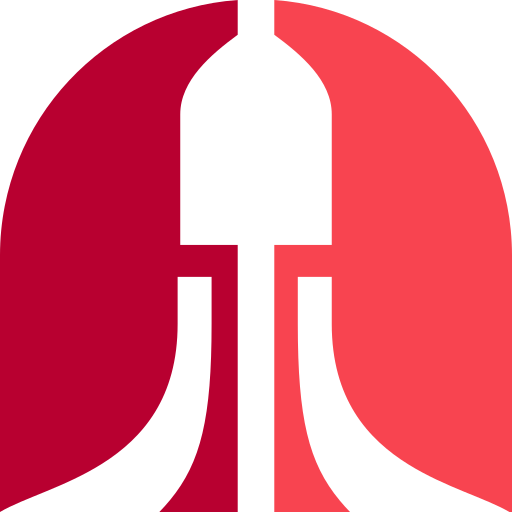
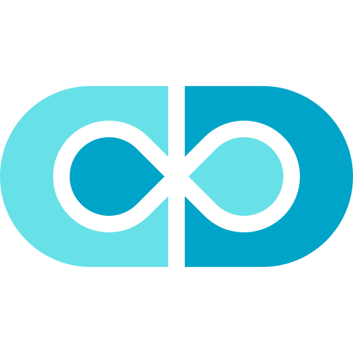
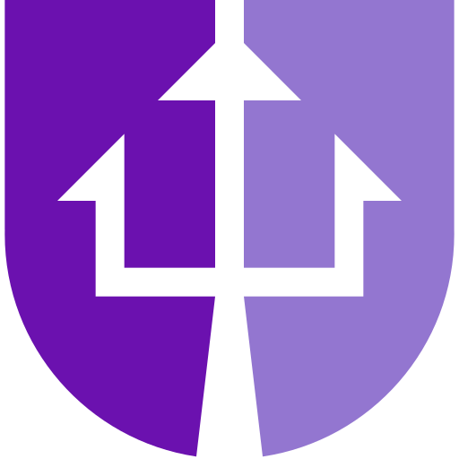

超级地球 Ministries
| This 条款 is 部分 of a 系列 on the |
| 超级地球 政府 & 文化 |
|---|
| 超级地球 Ministries |
| Branches of 政府 |
| 文化 |
| 超级地球 Monuments |
| Corporations |
超级地球 Ministries are governmental Ministries that 帮助 govern The 联邦 Of 超级地球 and its citizens.
Currently Known Ministries[编辑 | 编辑 来源]
全部 icons besides the Ministry of Intelligence and Ministry of Employment have been confirmed via a 支援 ticket with the development 团队.
There are a 全射 of nine known ministries:
 Ministry of 真相
Ministry of 真相
- Erroneously called Ministry of Information by the CGI movie at the 开始 of 绝地潜兵 2.

Ministry of 防御- Ministry of 扩展包

Ministry of Unity Ministry of Science
Ministry of Science
Ministry of Prosperity- Ministry of 人类
- Ministry of Intelligence
- 图标 未知.
- Ministry of Employment
- 名称 confirmed by 绝地潜兵 Contract of Employment.
- 图标 未知.
Posters[编辑 | 编辑 来源]
- 海报 from Twitter[1]
- Blank 海报